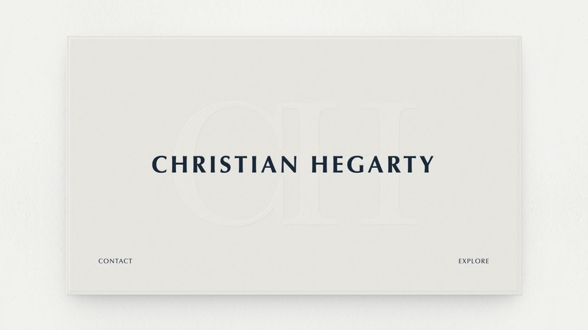
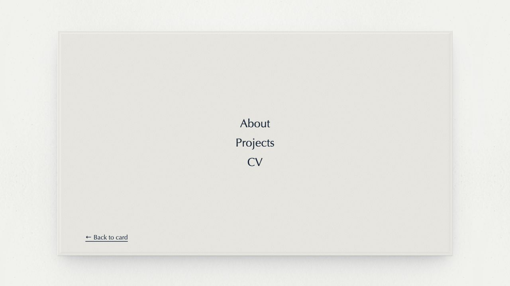
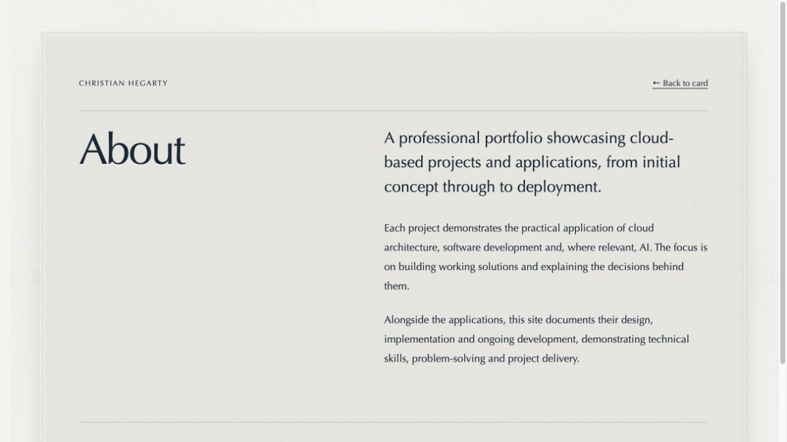
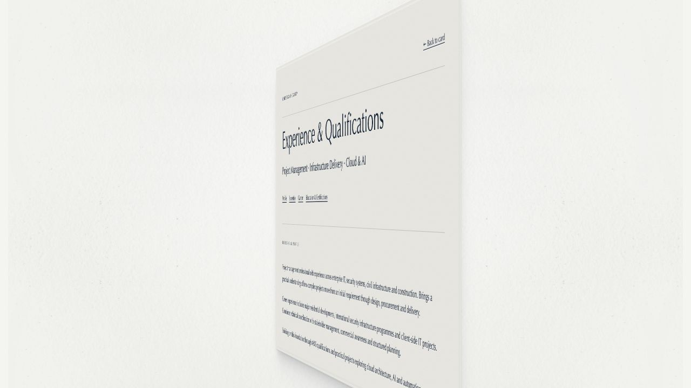

Project case study · Local prototype
Professional Portfolio Website
A digital business card that opens into a professional portfolio.
A website to present experience, qualifications and working projects, with the design and development of the site documented as a project in its own right.
- Built with
- HTML, CSS & JavaScript
- Design
- Responsive paper cards
- Next stage
- AWS hosting & deployment
Site structure
The homepage is a single business card. Explore turns it over to reveal the main navigation; Contact turns it the other way to reveal email and phone details. The longer pages use the same paper surface and grow with their content.
Explore
- About — the portfolio’s purpose
- CV — experience and qualifications
- Projects — the portfolio and its case studies
Contact
Email and mobile number on the reverse of the card.
Each destination is a separate HTML page with its own address. Shared styles keep the card width, typography and spacing consistent. Page-specific styles handle layouts such as the CV and project case studies.
From paper to browser
Colour and material
A pale bone background, a slightly deeper card and blue-black ink create the visual foundation. Fine grain, a blind-embossed CH monogram and a raised perimeter give the card depth.
Responsive proportions
The business card keeps a 1.75:1 aspect ratio and responds to the browser’s width and height. Reading pages keep a shared maximum width and stack their content on smaller screens.
The background uses a mirrored paper tile to soften the joins between repeated images. The card has its own finer texture so the two surfaces remain distinct.
The card flip
Navigation follows the physical idea of turning a card over. About, Projects and CV turn into full reading pages, with their content already visible on the reverse.
Prepare
Measure the destination using its own styles, then lay out its text at the final width.
Turn and resize
Rotate the two faces while scaling the card into position. The text keeps its line breaks throughout the turn.
Continue reading
Open the destination at the matching position. Long pages, including the CV, then scroll normally.
Try the real interaction
Open the preview, select Explore or Contact, then choose a page. Switch between light and night mode without leaving this case study.
The site honours reduced-motion preferences. When reduced motion is enabled, the links open normally without the turn.
Light and night mode
The site follows the device’s light or dark appearance. Night mode changes the surroundings to blue-black and introduces a warm glow around the card, while keeping a light paper surface for reading.
Light
Neutral paper, subtle shadows and blue-black ink.
Night
A darker surround and a soft, warm backlight.
How the automatic theme is selected
<link id="dark-theme" rel="stylesheet" href="dark.css"
media="(prefers-color-scheme: dark)">The browser applies the dark stylesheet when the device requests it. A theme query parameter also allows either appearance to be previewed explicitly.
Selected code
The core portfolio uses HTML for content, CSS for presentation and JavaScript for the interactions. These excerpts come from the current implementation.
HTML — ordinary links, enhanced with motion
<a class="card-open" id="business-card" href="explore.html" data-card-flip="180" aria-label="Explore the portfolio">
<a class="card-front-contact" href="contact.html" data-card-flip="-180">Contact</a>The destination remains a normal link. The flip script reads its direction from a data attribute, while ordinary navigation still works without JavaScript.
CSS — keeping the business card in proportion
width: min(88vw, calc((100svh - 9rem) * 1.75), 62rem);
min-width: min(18rem, calc(100vw - 2.5rem));
aspect-ratio: 1.75;The card size considers both the available width and height, with an upper limit on large browser windows. Additional rules adapt it to narrow or short viewports.
JavaScript — moving a fixed text layout
animations.push(scene.animate([
{transform: `translate(${startLeft - endLeft}px, ${startTop - endTop}px) scale(${width / targetBounds.width}, ${height / visibleHeight})`},
{transform: "translate(0px, 0px) scale(1, 1)"}
], timing));The destination is laid out at its final width before this animation runs. Translation and scale move the card into place without repeatedly rewrapping its text. Rotation runs alongside this using the same timing.
The website in use
Screenshots captured during the local build. Select an image to view it at full size; use the interactive preview above to try the current behaviour.

01 · The business card
The compact entry point to the portfolio.

02 · Navigation on the reverse
Three destinations within the same card proportions.

03 · A card that becomes a page
Shared materials and spacing carry into the reading layout.

04 · Content during the turn
The text is present as the page comes into view.
From local prototype to hosted portfolio
The next stage is a private S3 origin behind CloudFront, HTTPS and password-protected access for review. GitHub will hold the version history and an automated workflow will publish approved changes.
Planned hosting workflow: edit → local preview → commit → push → deploy.